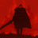

Bell Bearer DashboardSkins restyle the popup and this dashboard. Each one carries its own day and night, so the moon button switches within the skin you picked.
[title](url) only when you explicitly pick it; ordinary copying is never affected
Settings that only make sense for one particular site — pick it to see them.
Bell Bearer helps you organize and manage your YouTube video bookmarks and your Chess.com and Lichess games.
Version: 1.0